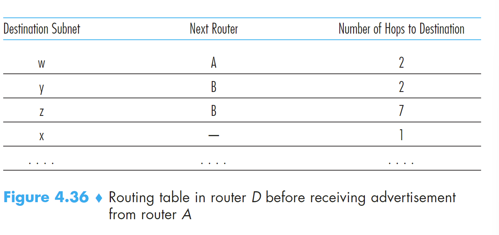
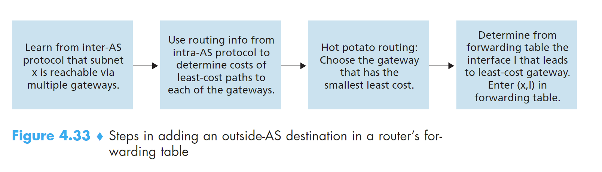

# Hierarchical Routing
# 1 Hot-Potato routing
理念：a router send the packet to the gateway router that has the smallest router-to-gateway cost among all gateways with a path to the destination.
# Routing in the Internet
autonomous system（AS）：在同一个行政和技术管理下的 router 集合，在这些 routers 之间执行相同的 routing protocol
# 1 Intra-AS Routing in the Internet : RIP
在 autonomous system 里如何 routing？
- RIP：routing information protocol
- OSPF：Open Shortest Path First
# 1.1 RIP
RIP 也是一种 DV 协议，但在 RIP 中边架设在路由器以及它的目标 subnet 之间，边的 cost 使用 hop 来衡量，hop 是从路由器以及它的目标 subnet 的最短路径上穿过的 subnet 数。hop 值小于 15 是 AS 系统使用 RIP 的限制
和 DV 一样，RIP 也需要定期更新 hop 矩阵表，RIP 使用 RIP response message 和 RIP advertisement 来更新矩阵表。每一个 router 有 RIP table（routing table）路由表有三列：destination subnet、the next router along the shortest path（源 router 下一个跳转的 router）、number of hop。

现在考虑存在 hop 发生变化的情况，当一个路由器的路由表发生变化，会发出 advertisement，收到消息的路由器根据这个 advertisement 携带的信息对自身的路由表进行修改，默认这个消息的最小消息是正确的。
现在来考虑如何实现 RIP 协议。如果超过 180s 没收到来自相邻路由的 advertisement 会认为这个 router 不可到达，需要重新修改 routing table 并发送 advertisement。可以使用 RIP request message 主动请求信息，这些 message 使用 UDP 协议。拿 UNIX 系统来举例，RIP 程序运行在 routed 进程中，这个进程负责维护 routing information 和邻居 router 的 routed 进程交换信息，也就是 request 和 advertisement 的过程。
重点是修改路由表这一部分！！！
# 1.2 OSPF
OSPF 部署在 upper-tier ISPs，RIP 部署在 lower-tier ISPs。OSPF 是使用 link-state 信息流和 Dijkstra 算法的 link-state 协议。OSPF 协议把整个 AS 系统看成一个图。其中的任何一个 router 会运行算法得到一个 shortest-path tree to 所有的 subnets，自己是根节点。OSPF 不会强行更改 link weight，但使用 link weight 提供决定最小开销路径的 routing。和 RIP 不同，router 传播 information 到所有的 routers in AS, 甚至 router 会定期传播 link-state information，哪怕没改变。
OSPF 的优点：
- Security：路由器之间交换 link information 可以要求认证，受信任的路由器才可以参与 OSPF 协议在 AS 中。两种认证方式：simple 和 MD5 。simple 就是简单的密码认证，MD5 是密钥认证。
- Integrated support for unicast and multicast routing
- Support for hierarchy within a single routing domain：构建最短路径树也就是划分了层次！层次化可以带来很多的好处
area border router：负责 routing packet outside the area
backnone area：AS 中一个 OSPF 区域被配置为骨干区域。负责在 AS 中的不同区域 route traffic
# 1.3 Inter-AS Routing：BGP
Board Gateway Protocol，在 AS 之间 routing
- 持有相邻 ASs 可达性的信息
- 在 AS 内部的所有 router 中传播可达性信息
- 根据可达性信息和 AS policy 决定 good router
BGP 知道 internet 中的 AS 中的所有的 subnet 并且知道怎么到达该地方
BGP Basic
BGP 在 IP 层中是非常非常重要的！！！下面会非常详细的介绍 BGP 协议。这个协议把网络层中所有的事物都 glue 在一起。不管是 AS 内部的 routers 之间还是不同 AS 的 router 之间可以建立 semipermanent TCP connect。这是 BGP 的基础。现在遇到我们的第一个概念 BGP peers，TCP connect 连接的两端的 router 称为 BGP peers。用来传送 BGP messages 的 TCP 连接称为 BGP session。之前介绍过，TCP 连接分内部连接和不同 AS 之间的外部连接，所以 BGP session 也分为 external BGP session 和 internal BGP session。BGP 协议中，AS 可以通过相邻 AS 了解目的地的可达性。在 BGP 中，注意目的地不再是 host，而是 CIDRized prefixes，代表一个 subnet 或者和 subnet 的集合。
现在了解了 BGP 中新出现的概念，我们来接着看 BGP 如何 distribute prefix 可达性信息通过 BGP sessions。假如 AS3 想要传播从 AS3 出发可达的 prefix，把这些 prefix 打包成 BGP message，然后在 gate way routers 之间建立 BGP session 发送给 AS1，然后 AS1 也会发送自己的 prefix 给 AS3，然后 AS1 也对自己的邻居 AS2 发送 。eBGP session 收到别的 AS 的信息后会使用 iBGP session 向内部路由器进行传播。当一个 gate router 的信息传送给 AS 中的另外一个 gate router 时，又会把这个信息传递出去，这样 AS2 也知道 AS3 的信息了。当一个 router 收到新的 prefix 时，就会在 forwarding table 中新建一个 entry。
recall：forwarding table 由 entry（x,I）x 是收到的从什么什么 AS 可以到达的 prefix（subnet） x； I 是 AS 中收到该消息的 gateway router 的 interface（这个 interface 是对内部的！！！！！！）；
Path Attributes and BGP Routes
再来了解一些概念：
- ASN autonomous system number：在 BGP 中标识该 AS 的编码，就像接口的 IP 地址一样。
- route：router 广播一个 prefix 时，会带上表示 BGP attribute 的 number。prefix 带上 attribute number 就是 route。
- BGP attribute：
- AS-PATH
传播一个 prefix 时，经过的 AS。一个 prefix 是从 AS2 传到 AS1 的，那么 AS1 要传播这个 prefix 时会带上 AS-PATH：AS2AS1，这样就能知道这个 prefix 的传播路径，也可以用来预防 looping advertisements - NEXT-HOP：AS-PATH 的开始的第一个 router interface，可以用来计算 gateway router 选择哪个 interface 来得到传输到 internal router 的最小路径的开始，并作为（x，I）中的 I 存入该 internal router 的 forwarding table entry，这里会使用 hot-potato routing 来决定是哪个接口
- AS-PATH
非常重要的一张图，用来确定 router 的 forwarding table

先使用 inter-AS 协议对节点可以到达 x 的 gateway routes，然后使用 intra-AS 算法决定各个 gateway router 的最小消耗和对应路径，使用 Hot Potato 来决定最终的 I 是哪个
当 gateway route 收到 route advertisements 时，会使用 import policy 来拒绝某些 route 或者设置某些 route 的优先级
BGP Route Selection
通过分发，路由器可能知道一个 prefix 的不同 route，需要做出选择。选择的原则如下：
- routes 被赋值了一个 local preference value as attribute。优先级。
- （local preference value 一样的情况下）最短的 AS-PATH 被选择
- （local preference value 和 AS-PATH 的长度一样的情况下）有着最近的 NEXT-HOP router 的 route 被选择，这里最近的概念是 intra-as 算法决定的最小的 cost，这个过程就是 hot-potato routing
- 如果还有，使用了 BGP identifiers 的被选中
Routing Policy
stub network：末节 network
multihomed stub network：有多个连接的末节 network
# 子网掩码的确定，子网的划分！！！
步骤：
- 把要划分的子网数目转换为 2 的 m 次方（m 是要划分的子网数）
- 取上述要划分的子网数的 m 值
- 将确定的 m 值按高序占用主机地址 m 位后转换为十进制
- 如 m=3 则是 11100000，转换为十进制就是 244
- 如果是 A 类网，子网掩码为 255.244.0.0，B 类网，子网掩码为 255.255.244.0，C 类网，子网掩码为 255.255.255.244
- m=3，故向主机号借用 3 位作为网络号，其他 5 位作为主机号
- 确定各个子网的网络号和广播地址，它们之间就是子网可用的 ip
公式：在得到网络号的基础上，将网络号右边的表示 IP 地址的主机部分的二进制位全部填上 1，再将得到的二进制数转换为十进制数就可以得到广播地址
** 主机号全为 1 为广播地址，不能分配 ip，分配 ip 时，先确认广播地址和子网掩码，中间的就是能够 **